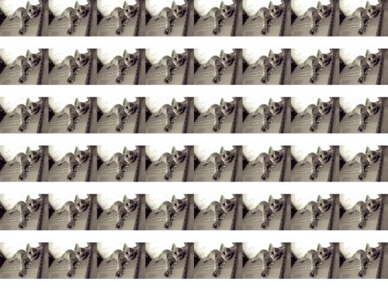

Posted by FredericAlbers on May 08, 2008
nodebox will reloop it 9 times (3x3)
every time nodebox goes through this loop
he will make a choice from one of the 20 first pictures
he finds on flickr, downloads it and draws it.
Hope this helps and good luck.
Nodebox is fun!
Hi Riccardo,
This might be a quick solution to your question.
size(800, 600) web = ximport("web") for x, y in grid(3,3,50,50): img = choice(web.flickr.search("mac",start=1, count=20)) img.download() image(img.path, x, y,width=50)The grid works as a for loop, so this means that
nodebox will reloop it 9 times (3x3)
every time nodebox goes through this loop
he will make a choice from one of the 20 first pictures
he finds on flickr, downloads it and draws it.
Hope this helps and good luck.
Nodebox is fun!

Flickr and NodeBoxe
Posted by riccardo on May 08, 2008
hi everybody, i'm a newbie but i felt in love with Nodebox some weeks ago....it's awesome, thanks tom!
i have a problem, i'm trying to do something like this:
http://workshops.nodebox.net/2008/students/niina/workshop-poster?size=preview
using random imges taken from flickr....but i only can draw a canvas with the same image!
here's my (very poor) code:
size(1600, 1200)
web = ximport("web")
images = web.flickr.search("mac", start=1, count=100, cached=True)
images.sort()
img = images[1-100]
img.download(thumbnail=False)
for x, y in grid(10,10,200,200):
image(img.path, x, y,width=200)
how can i get randomization in your opinion?
thanks
cheers
riccardo